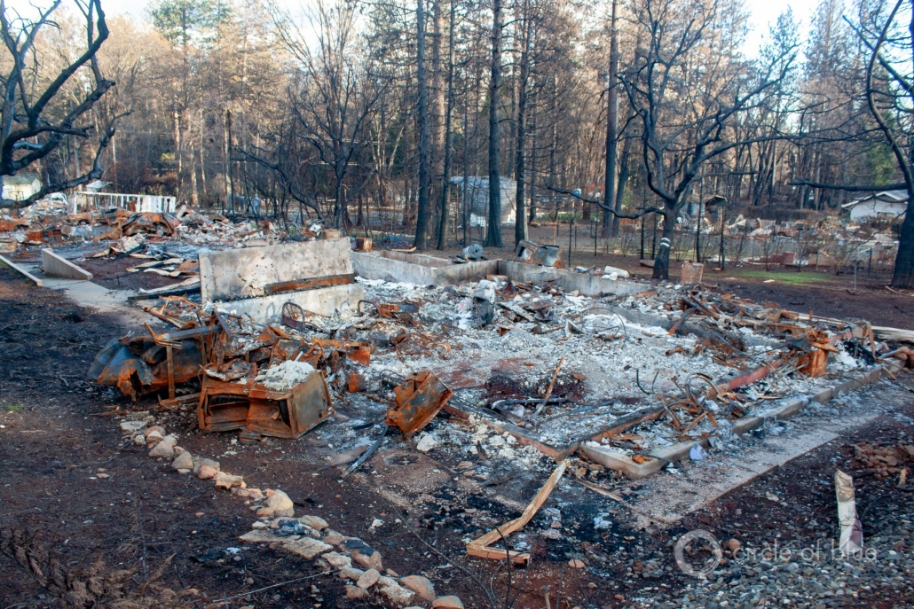

Restoring Water Systems in Paradise, California
I’m Eileen Wray-McCann for Circle of Blue.This is What’s Up with Water, your 'need-to-know news' of the world’s water, made possible by support from people like you.
In India, hopes are rising with a revival of monsoon rains, after a very disappointing June.The first four weeks of monsoon rains have been numbered among the worst ever, with rainfall at 35% below average.The monsoon provides roughly three-quarters of India’s annual rainfall, and is critical for water resources, agriculture and the economy.Without enough rain, the sowing of crops had been delayed by three weeks, sparking fears of total crop failure in places already grappling with water shortages.
Meteorologists blamed the early weakness of the monsoon on unfavorable climate conditions, such as an El Niño phenomenon that slowed formation and movement of the southwest monsoon.As the El Niño has slackened, the monsoon has gained steam.India’s Economic times predicts that crop planting can swiftly rise to normal levels if sufficient rainfall continues in the next couple of weeks.The recent rain surge has already bolstered conditions in the main grain-producing areas, and the weather forecasts called for heavy rainfall in western and northern India starting this week.
The rain was welcome relief in Chennai, India’s sixth-largest city, although the southwest monsoon doesn’t usually do much to replenish its supplies.Before this monsoon, Chennai had not seen rain in over six months.It has been water-stressed for some time, with municipal water running only a couple of hours each day.But things have gotten much worse this summer.Groundwater reservoirs sustaining the city’s ten million people are giving out.The four main reservoir lakes supplying Chennai are all but dried up.According to National Public Radio, official data indicate that the water stored in the four lakes, when combined, is less than one-hundredth of what it was this time last year.One expert, saying the situation was 'shocking but not surprising,' said it was due to 'a toxic mix of bad governance and climate change.'As an emergency measure, a train is scheduled to bring water into Chennai from outlying areas, but critics question what they consider a policy of prioritizing the city at the expense of the state.In contrast, a local and more permanent solution, with a promising start, was managed poorly.In 2002, the government mandated rainwater harvesting on all buildings, and the novel idea paid off handsomely after monsoon rains raised the water table enough to supply the city for years.But officials didn’t monitor the infrastructure and things gradually broke down.
Climatologists say all of India is vulnerable to the forces plaguing Chennai.Last year, government experts advised that 21 leading Indian cities, including the capital, New Delhi, and India’s tech center, Bengaluru, will run out of water as soon as next year, affecting some 100 million people.
China needs more than $400 billion to improve pollution and sanitation in rural areas.This year, the country has allocated $1 billion for a rural 'toilet revolution,' part of a 'war on pollution' now in its sixth year.Previous years have focused on air quality in industrialized areas and cities.Reuters News reports that not much has been done in the countryside, where much land and water has been contaminated due to poor infrastructure, fertilizer and pesticide overuse and 'substandard backyard industrial plants.'The agricultural ministry pledged to address infrastructure and education efforts last year, but admitted that funding was not yet sufficient.China is eager to increase farmland in the face of growing urbanization.By the end of next year, it intends to restore 90% of its contaminated acreage to be ready for planting.
The recent heatwave in Europe pushed temperatures across the continent into record highs.In Spain, where wildfires in the northeast are finally being contained, 43 °C (109 °F) was recorded.France set a new record on Friday with 45.9 °C (114 °F) in the south of the country.Weather officials compared to California’s Death Valley in August.The UK marked its hottest day of the year on Saturday, with 34 °C (93 °F) in west London.The Washington Post reported that the larger weather pattern behind this heatwave is related to a stalled high-pressure zone that caused major melting in Greenland a couple weeks ago.This weather pattern has lasted longer than others on record, and may represent a more common phenomenon in a warming climate.
In Kenya, the number of people facing food insecurity could reach two million this month, according to Bloomberg News.That’s a 25% increase since May.The March-to-May rainy season in the East African nation was slow to arrive, poorly spread and below average in quantity.Kenya may need to import twice as much corn as it did last year, and the price of corn has been reflecting uncertainty and speculation.
In Nigeria, herders and farmers continue to fight over water and pasture despite stricter grazing laws.Climate change is intensifying droughts and increasing desertification, and pastoralists in the north are venturing farther south in search of grazing land.But agriculture has expanded into those areas as well, setting up conflict as herds wander into crops.Clashes between farmers and pastoralists over land and water have been plaguing the country for years.In 2017, the country’s Benue state tightened laws about livestock grazing on open land, but the rule has done little to prevent continued quarrels as farmers struggle to make a living and pastoralists must choose between breaking the law, taking their chances against angry farmers, or watching their animals die.Well over a thousand people were killed in conflicts last year.The federal government has announced a ten-year pilot program that sets aside land and provides training so that herders can become ranchers.
In Canada, rain swept across much of country during end of June, easing a three-year drought that has disrupted farming and livestock.Last Thursday, heavy rain and coin-sized hail hit southwestern Saskatchewan, where the prairies have endured one of their worst dry spells in almost 20 years.The drought has added to the pinch of a depressed economy and reduced exports.While the rain has helped, production will still suffer.An agroclimate specialist told Reuters news that after a couple years of drought, the moisture reserves in the soil are gone.June is generally the wettest month, and there is no certainty when the next storm will come, or what it will bring.
In the United States, unrelenting rainfall continues to swamp agriculture in the Midwest.From Ohio to Nebraska, cold and wet weather has delayed planting by several weeks, including in key corn-growing regions such as Illinois.The agriculture department is already lowering production estimates, but farmers are unlikely to benefit from higher prices due to other market forces.The late planting season is a stress in addition to the damage of flooding to the land, equipment and supplies.With saturated topsoil, plants create shallower roots, which are less stable in wind and less nourishing once the soil dries.A delayed planting means less pollination due to the warmer weather.And many farmers are now facing a harvest pushed into mid-October, raising fears of an early frost.
As development continues in vulnerable low-lying areas across the U.S, a group of residents from 16 states is planning to draw attention to the threat.The group, Higher Ground, represents flood survivors from Florida to Missouri to Illinois, and its national campaign is called the United Flooded States of America.It advocates for wetland and natural buffer protection, runoff and stormwater management, a ban on building in flood zones, reforms to flood insurance, the use of climate science to inform local decisions and reducing global warming through clean, renewable energy sources.
In Minnesota, the PolyMet Mining Corp.is seeking nearly $100 million from state bankers in order to build a proposed copper-nickel mine, despite concerns over the mine’s environmental impact.Green groups say the project could cause water pollution problems, and the environmental group WaterLegacy has challenged the legitimacy of a water permit granted to the mine.The state’s Legislative Audit Commission is set to begin an investigation to determine if the permit review process was correctly followed.
Keurig Dr Pepper withdrew its Peñafiel brand of unflavored mineral spring water from U.S. stores after the Center for Environmental Health found high levels of arsenic in the product.Consumer Reports and the Center for Environmental Health also found high levels in Starkey Water, owned by Whole Foods, although the levels did not exceed F.D.A. standards.Arsenic is a heavy metal found in rocks, soil and throughout the environment.It can seep into ground water, which is the most common way that people ingest it.Arsenic has been linked to respiratory problems, heart disease, diabetes and cancer.The EPA sets a limit of 10 parts per billion for arsenic in public water systems, and that’s the same limit the Food and Drug Administration sets for bottled water.However, critics argue that since regulations for tap water and bottled water are administered differently, bottled water does not get the same scrutiny.Consumer Reports noted that 'few states regularly conduct independent tests on bottled water for contaminants, as municipalities must for tap water.'The New York Times reported that there are no public databases for information on bottled water quality.Erik Olson, a drinking water specialist at the National Resources Defense Council asked the Times 'Tap water systems are required to do an annual report to their consumers of their test results.Why not bottlers?'
In Michigan, health and environmental leaders want residents to know that its new testing may show higher lead measurements in their drinking water, but it’s the testing that has changed, not the water.Michigan’s lead and copper testing protocol has been updated: in the past, lead testing was performed only on the first liter of water drawn from the tap; now, five liters will be drawn, and both the first and fifth liter will be tested.That way, the water resting farther back in the lines can be examined.By 2025, Michigan plans to lower the threshold for action on lead concentrations, from 15 parts per billion to 12 parts per billion.And over the next 20 years it intends to replace lead service lines altogether.The state’s web site will show community lead testing results and provide guidance on limiting lead exposure.
In Alaska, the Environmental Protection agency says it will reevaluate the development of a sprawling copper and gold project, which was stopped due to water pollution concerns.Southwestern Alaska’s Pebble Mine was put on hold in 2014 because its waste disposal plans were restricted under the Clean Water Act.Last week, the EPA said it will now reconsider the decision, a statement that comes as the Trump administration seeks to reduce regulations on the mining industry.The mine plan includes construction of a new road, pipeline, and a power plant near the starting points of two rivers.A decision on a construction permit for the mine is anticipated by the middle of next year.
In the Great Lakes basin, the state of Michigan last week filed a lawsuit aimed at shutting down the Enbridge Line 5 pipeline.The controversial pipeline runs under the Straits of Mackinac, where the Great Lakes Michigan and Huron meet.The pipe system moves 540,000 barrels of crude oil per day.Enbridge says it hopes to replace pipeline that is decades old, but the lawsuit claims continued operation of the line is a violation of the Michigan Environmental Protection Act.
Scientists have discovered a sizable undersea aquifer off the coast of the northwestern US.An analysis of the sub-sea floor revealed an enormous aquifer of relatively fresh water stretching from Massachusetts to New Jersey.The water is encased in porous sediments, and it’s the largest undersea freshwater aquifer found in the world, covering about 15,000 square miles.There are two main theories for the water under the seabed: that it is trapped water from melt-off after the last glacial age, or that it is fed by contemporary subterranean runoff from the land nearby.Researchers are hopeful that similar formations exist elsewhere on earth.
Circle of Blue last week reported on California, where plumbing experts are questioning policy and government agencies are redefining their roles after wildfires left communities with contaminated water.
When the Camp Fire tore through the Sierra Nevada foothills last November, the flames nearly obliterated the town of Paradise.They left behind a blighted water system.Pipes and plumbing were contaminated by benzene and other volatile organic compounds.Restoring the water system is central to restoring Paradise.The California State Water Resources Control Board’s Division of Drinking Water recently published guidelines for testing the plumbing in buildings that survived the fire.State officials say they focused on cost and convenience for building owners, while still protecting public health.
The recommendations, however, are drawing criticism from academic researchers who say that they’re not enough.Andrew Whelton is a Perdue University plumbing expert who has been assisting Paradise Irrigation District, the local water utility.He said that the state’s guidance falls short of what’s needed to detect contaminants in homes and buildings.Whelton and colleagues from a number of universities submitted their own set of recommendations, addressing their concerns in a letter to the State Water Board.
'Our guidance did not consider cost or convenience,' Whelton told Circle of Blue.'We considered what actions you need to take to determine if plumbing is contaminated or not.'
The differences between the two approaches include the number of sample locations taken in a building, the types of chemical contaminants being looked for, and the length of time water should sit in a pipe before being tested, which may affect the leaching of chemicals from the pipes.
The debate over testing water in buildings comes as the State Water Board is still trying to figure out its role in Paradise.State agencies are in an uncomfortable position.Drinking water standards, aside from lead and copper, are focused on utilities, not individual systems.They are measured at the point where water from a treatment plant enters the distribution system.
Paradise’s fire-damaged pipes have blurred that regulatory distinction.The Paradise Irrigation District treatment plant was not damaged, and the water coming out of the plant meets all standards including for benzene.Yet there is contamination.The problem is still being assessed, but is thought to be within the distribution system and within building plumbing itself.Pipes are made of a variety of materials that interact in different ways with chemicals.Contamination of this sort and at this scale is new terrain for regulators, and they are moving cautiously.
Dan Newton is deputy director of California’s Division of Drinking Water.He told Circle of Blue that the guidance his agency published was a response to the need for a new approach and a lack of direction at the local level.According to the state, the higher levels of testing recommended by the researchers is not warranted by the low level of contaminant risk.Both local health officials for Paradise and the U.S. Environmental Protection Agency told Circle of Blue that they defer to the state agency’s guidance.
And that’s What’s Up With Water from Circle of Blue, which depends on your support for independent water news and analysis.Please visit circleofblue.org and make a difference through your tax-deductible donation.
Posted On: 2019-08-12T00:00:00
Posted By: Eileen Wray-McCann

Content Date: 2019-08-12
Download Date: 2021-05-12
Document ID: L0C04B6JP